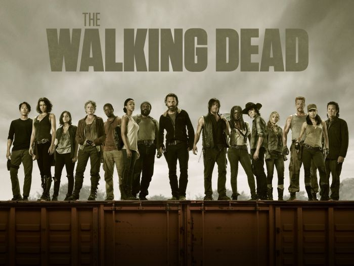

SUPERNATURAL
Zdecydowanie na pierwszym miejscu stawiam Supernatural. Absolutne fenomenalne 15 sezonów, przy których bawiłem się wyśmienicie. Wszystko dzięki narzeczonej, która pokazała mi ten serial :)
WALKING DEAD
Można powiedzieć, że klimat bardziej pasuje do postapo, ale w mojej ocenie umieściłbym go w dziale fantasy. Za pierwszym razem nie obejrzałem serialu do końca, utknąłem gdzieś w okolicy 6 sezonu o ile dobze pamiętam, teraz jestem w trakcie rewatchu i bardzo dobrze się bawię oglądając metamorfozę jaką przeszli główni bohaterowie serii. Polecam każdemu :)
GRA O TRON
Obejrzałem cały serial, pomimo dezaprobaty na linii zmiany książka -> serial. Cała seria zrobiła na mnie dobre wrażenie, nawet ostatni sezon był dla mnie w porządku pomimo skarg wielu ludzi. Serial oglądałem po przeczytaniu książki i uważam, że scenarzyści zrobili kawał dobrej roboty.